OneSearch
1. 基本信息
- 标题：OneSearch: A Preliminary Exploration of the Unified End-to-End Generative Framework for E-commerce Search
- 作者：Ben Chen, Xian Guo, Siyuan Wang, Zihan Liang, Yue Lv, Yufei Ma, Xinlong Xiao, Bowen Xue, Xuxin Zhang, Ying Yang, Huangyu Dai, Xing Xu, Tong Zhao, Mingcan Peng, Xiaoyang Zheng, Chao Wang, Qihang Zhao, Zhixin Zhai, Yang Zhao, Bochao Liu, Jingshan Lv, Xiao Liang, Yuqing Ding, Jing Chen, Chenyi Lei, Wenwu Ou, Han Li, Kun Gai
- 机构：Kuaishou Technology
- 时间：2025-10-22（arXiv v5）
- 链接：https://arxiv.org/abs/2509.03236
- 关键词：E-commerce Search、Generative Retrieval、Hierarchical Quantization、Reward System、Encoder-Decoder
- pdf位置：
C:\Users\chaol\Desktop\推荐论文阅读\GRS\OneSearch.pdf - 笔记位置：
论文笔记/精排/生成式搜索/OneSearch.md - 分类：精排 / 生成式搜索
1.1 相关论文
- OneSearch-V2：这篇的直接后续工作。OneSearch-V2 保留了 OneSearch 的 generative search 主骨架，但进一步加入关键词化 CoT、无额外参数的 reasoning self-distillation，以及直接基于行为反馈的 TPMA 偏好对齐。
2. 一句话总结
这篇论文想解决的不是“把搜索里的某一段 recall 做成生成式”，而是把传统电商搜索里 recall -> pre-rank -> rank 这条多阶段流水线，改写成一个统一的端到端生成问题。它的关键不是单独换个 backbone，而是把 关键词增强的层次量化编码 + 多视角行为序列注入 + 统一 encoder-decoder + 偏好感知奖励系统 串起来，让模型既能直接生成 item SID，又能在在线上兼顾相关性、点击和转化。
3. 论文在解决什么问题
3.1 传统 MCA 的两个结构性问题
传统电商搜索系统通常采用 multi-stage cascading architecture（MCA）：先大规模召回，再预排，再精排。这个范式能控制延迟，但作者认为它有两个根本问题：
- 计算是碎片化的：大量资源消耗在多个独立阶段上，模块间难以共享表示与推理能力。
- 目标是冲突的：pre-rank 更像“尽量别漏”，rank 更像“把对的排前面”，每一段都在优化自己的局部目标，最后很难形成统一最优。
这意味着 final rank 再强，也只能在 pre-rank 给出的候选里重排；前面没留下来的 item，后面根本救不回来。
3.2 Figure 1：从多段流水线改成统一生成
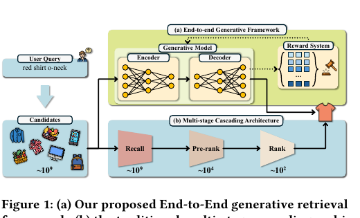
Figure 1 是整篇论文最核心的出发点：
- 传统 MCA 是
query -> recall -> pre-rank -> rank，每一层缩小候选集。 - OneSearch 则让模型直接从用户查询和画像生成 item SID 序列，再配合 reward system 做偏好校正。
这张图真正想表达的不是“把三个模块画成一个框”，而是把搜索问题从“多阶段筛选”改成“统一生成 + 统一训练目标”。作者后面几乎所有设计，都是为了让这个统一 formulation 在工业搜索里真的跑起来。
3.3 Figure 3：为什么搜索不能直接照搬推荐里的生成式检索
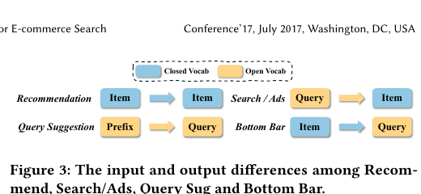
Figure 3 解释了搜索相比推荐更难的地方：
- 推荐 更接近 closed-vocabulary 的
item -> item。 - Query Suggestion 是
prefix -> query，输入输出都偏 open-vocabulary。 - Search / Ads 是
query -> item，输入是开放文本，输出却是离散 item。 - Bottom Bar 甚至是
item -> query。
这意味着搜索不是把推荐里的 generative retrieval 平移过来就行。模型必须同时处理开放文本输入、强 query-item 相关性约束、以及闭集 item 生成，所以需要专门的编码、量化和 reward 设计。
4. 方法总览
4.1 Figure 4：把整套方法先看成一条流水线
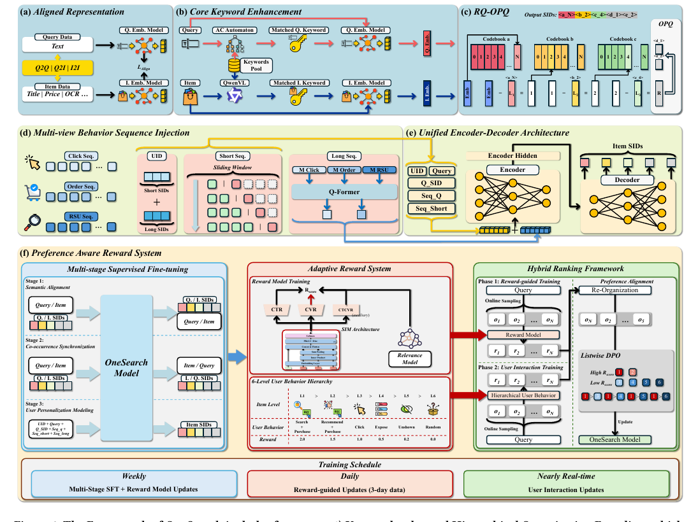
Figure 4 最适合用来先建立全局图景。论文的方法不是“一个 backbone + 若干技巧”，而是一条从表示学习到在线偏好校正的完整链路：
(a) Aligned Representation先用 query-item 真实交互，把 query / item 的文本表示对齐到同一个业务语义空间。(b) Core Keyword Enhancement再把真正决定意图的核心关键词从长文本里拉出来，避免噪声属性把表示冲淡。(c) RQ-OPQ把增强后的表示编码成可生成的 SID 序列，其中 RQ 负责层次语义，OPQ 负责细粒度差异。(d) Multi-view Behavior Sequence Injection把用户行为拆成行为构造 user ID + 显式短期序列 + 隐式长期序列三条输入路径。(e) Unified Encoder-Decoder Architecture把uid + query + query SID + 行为序列 + 用户画像统一送进 encoder-decoder，直接生成 item SID。(f) Preference Aware Reward System用多阶段 SFT、reward model 和 listwise preference alignment，把“能生成”继续推到“能按业务目标排好”。
这一节先保留全局视角。真正的细节，最好按原文 3.1 到 3.4 的顺序往下读，因为论文本身也是按这个顺序把逻辑铺开的。
5. 方法细节
5.1 Hierarchical Quantization Encoding：先把 query / item 编成可生成的离散世界
论文在 3.1 一开始先解释，为什么 generative retrieval 在搜索里一定要先解决 SID 编码问题。作者的判断是：
- SID 必须能保留 shared semantics，否则模型不知道“哪些 item 大体属于一类”。
- SID 也必须保留 distinctive attributes，否则很多“相似但不相同”的 item 会掉进同一个 ID。
- 搜索场景还比推荐多了一层 query-item relevance constraint，所以编码时不能只看 item 自己，还得考虑 query 和 item 的对齐方式。
因此 3.1 不是单独讲 tokenizer，而是分三步：先对齐表示，再增强关键词，最后做 RQ-OPQ 量化。
5.1.1 3.1.1 Aligned collaborative and semantic representation
作者不是直接拿原始文本 embedding 去做量化，而是先构建一个“文本语义 + 协同行为”混合的表示空间。
数据和特征来源有两类：
- 交互关系
从真实搜索日志里挑高质量的
query2query、item2item、query2item对，候选对由 ItemCF、Swing 等现有检索模型辅助筛选。 - 内容与业务特征 query text、item title、item price、keywords、OCR（image-to-text）、以及点击、加购、购买等统计业务特征。
这些信息会被 distilled BGE 编成 query embedding 和 item embedding 。但作者并不满足于“把它们丢进一个 encoder 就完了”，而是用了 4 类任务去共同约束这个空间：
这 5 项的作用分别是：
- ：让协同相近的 query 靠近。
- ：让协同相近的 item 靠近。
- ：让 query 和真实相关 item 对齐。
- ：让 show / click / order 这类不同行为层级带来的偏好强弱也进入表示空间。
- ：对高相似但容易混淆的 hard pairs，用 LLM 打 relevance 分，再让 distilled BGE 去拟合。
这里的 insight 很重要：作者不信任“纯文本相似度”就能搞定搜索编码，也不信任“纯协同过滤”能带来强 query-item 约束，所以必须把两类信号绑在一起。我的理解是，这一步是在为后面的离散 SID 打地基。如果地基只带文本语义，那么后续 tokenization 很容易把“看起来像”误当成“业务上真的相关”。
5.1.2 3.1.2 Core Keyword Enhancement
接下来作者处理的是电商文本的另一个核心问题：文本太长、属性太多、噪声太重。
论文的判断是：
- item 文本里经常堆了很多营销词和互斥属性；
- 这些属性虽然有曝光价值，但会破坏真正关键属性的语义顺序；
- 如果 encoder 直接吃整段文本，就很难把“真正决定相关性”的词抓出来。
因此作者单独做了一个 Core Keyword Enhancement pipeline。
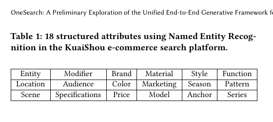
Table 1 先给出了 18 个结构化属性，包含 Location / Scene / Audience / Specifications / Brand / Color / Price / Material / Marketing / Model / Style / Season / Anchor / Function / Pattern / Series 等。
具体 pipeline 是这样的：
- 先用 NER 在 query 和 item 上抽这 18 类属性。
- 再用过去 1 年的 click query-item pairs 作为标注数据，为每个属性构建关键词池。
- 这些关键词按 PV 降序排序，只保留高频核心词。
- query 侧 在在线推理时用 Aho-Corasick automaton 快速匹配关键词。
- item 侧 用 Qwen-VL 去识别图文和标题中对应的属性关键词。
- 最后把这些关键词编码成向量 ，再与原始 query / item 表示做融合，得到增强后的表示 和 。
论文给出的融合公式是：
其中：
- 、 是上一步 aligned representation 的原始 query / item 表示。
- 、 是匹配到的核心关键词向量。
- 、 分别是 query / item 侧匹配到的关键词数。
这个公式很值得注意。它不是“完全用关键词替换原文本表示”，而是 50% 保留原表示，50% 注入关键词平均向量12。我的理解是，作者在这里故意保留了原始语义 anchor，避免模型只剩一组关键词标签；但同时又明确把核心属性推到表示中心。
5.1.3 3.1.3 RQ-OPQ Hierarchical Quantization Tokenization
有了增强后的 和 ，论文才进入真正的 tokenizer 设计。
作者对常见量化方法的批评很明确：
RQ-VAE / VQ-VAE / RQ-Kmeans更擅长编码共享特征；- 这会导致“相似 item 共享同一个 SID”，但丢掉独特属性；
FSQ / OPQ之类又不擅长保留层次语义。
所以他们做的不是简单替换，而是组合：
- RQ-Kmeans 负责 hierarchical semantics
- OPQ 负责 lateral characteristics
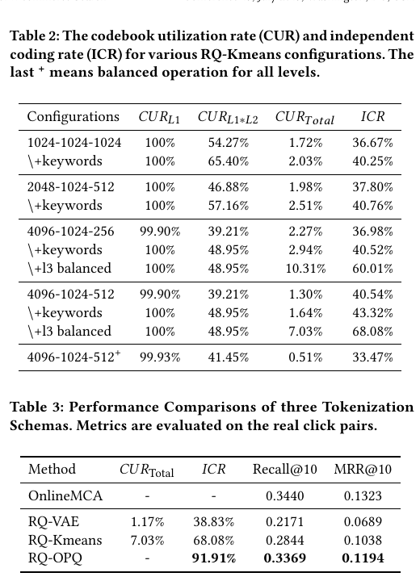
Table 2 和 Table 3 对应了这条设计思路里的三个关键判断。
第一，RQ-Kmeans 的前层 codebook 需要更大。作者把基础 codebook size 设为 1024、层数设为 3，但发现电商商品类别和属性更复杂，因此需要在前层扩大容量。论文测试了：
(1024,1024,1024)(2048,1024,512)(4096,1024,256)(4096,1024,512)
作者的 insight 是：RQ-Kmeans 会优先把前层容量用在 shared prominent features 上，所以前层如果不够大，就学不清楚复杂类目下的粗粒度结构。
第二，+keywords 会明显改善 CUR 和 ICR。以 4096-1024-512 为例：
CUR_{L1}从99.90%到100%CUR_{L1*L2}从39.21%到48.95%CUR_{Total}从1.30%到1.64%ICR从40.54%到43.32%
作者在正文里还额外点出：这个改进不是均匀发生的，而是对后层更明显。说明 core keyword 主要是在帮助模型把细粒度属性分开，而不只是提升粗粒度聚类。3
第三，作者认为 OneRec-V1 的 full-layer balanced k-means 在搜索里有问题。论文直接说了一个很重要的 insight：==对复杂细粒度属性，如果前几层也强制做 balanced k-means，会导致 hierarchical clustering collapse。==4
Table 2 里这个现象非常明显：
4096-1024-512 + keywords的CUR_{Total}是1.64%- 但
4096-1024-512+（所有层都 balanced）反而掉到0.51%
论文的解释是：太早把 item 强行均匀分散，会让很多相似 item 被塞进同一个 ID，层次结构被破坏。于是他们只在 第三层 做 balanced k-means，也就是 +l3 balanced，结果 CUR_{Total} 提到 7.03%，ICR 提到 68.08%。
然后作者继续往前走了一步：RQ-Kmeans 只能编码 cluster 结构，但最后 residual embedding 里仍然有 item 独特属性。于是他们再对 residual 做 OPQ，把最终 SID 扩展成 RQ-OPQ (2/256) 这种结构。
Table 3 给出最终证据：
RQ-Kmeans：ICR = 68.08%，Recall@10 = 0.2844，MRR@10 = 0.1038RQ-OPQ：ICR = 91.91%，Recall@10 = 0.3369，MRR@10 = 0.1194
也就是说，RQ 和 OPQ 组合后的收益，不只是“token 更细”，而是 query-item relevance constraint 真正变强了。
5.2 Multi-view Behavior Sequence Injection：把用户历史拆成三种不同角色的输入
论文在 3.2 不是简单讲“把行为序列加进去”，而是强调多视角建模：
- 一部分行为要变成 distinctive user representation
- 一部分行为要显式进 prompt，代表近期偏好
- 另一部分太长，只能先压缩成隐式长期画像
这三条路共同组成 Figure 4(d) 里的行为注入模块。
5.2.1 3.2.1 Behavior Sequence Constructed User IDs
这里作者先点名 Tiger 的方案有问题。Tiger 是往 prompt 前面加 user-specific token，但这个 token 是 随机哈希到固定词表 里的。论文的判断非常直接：
- random UID 不能充分表达 personalization
- fixed-size vocabulary 可能把行为不同的用户撞到同一个 ID
所以 OneSearch 改成用行为本身构造 user ID。
定义上：
- 短期行为序列是最近点击 item，记作
- 长期行为序列是按时间排序的历史 item，记作
然后用位置权重对这两段行为的 SID 做聚合：
最后 user ID 就是 SID_short 和 SID_long 的拼接，论文里说最终长度固定为 10。
这里最值得记住的 insight 是：作者不是把 UID 当成“又一个静态画像特征”，而是直接把它设计成行为序列的离散压缩表示。对新用户或冷启动用户，如果历史不够，就退化成“按 query-item 共现统计出的最常点击 item，再按 page views 逆序排序”的默认行为序列。
5.2.2 3.2.2 Explicit Short Behavior Sequence
作者把 short sequence 看得很重，理由也很朴素：近期行为比长期历史更能代表下一次搜索意图。
论文给了一个具体例子：一个即将入学的学生，最近购买的可能是宿舍用品或专业相关商品；而半年前的购买行为可能还围绕考试或文具。所以下一次搜索时，近期行为更重要。
在实现上，显式短期行为序列包含两部分：
- 最近输入过的 query 序列
- 最近点击 item 的序列
这两类行为的 SID 会直接跟在 constructed user ID 和当前 query 后面进入 prompt。作者的 insight 是：在 generative retrieval 里，把短期行为显式喂进去，比让模型完全从 user ID 或长期画像里自己恢复这些信息更容易学。
5.2.3 3.2.3 Implicit Long Behavior Sequence
长期行为序列的问题不是“不重要”，而是太长。论文直接说 click / order / RSU 三类长期行为长度可到 ，手工文本 prompt 根本放不下。
所以作者先把每个历史 item 的增强表示 映射到 SID，再查对应的 RQ centroid embedding：
然后分别对 click / order / RSU 三类序列，在每个 RQ level 上做聚合：
最后再经过：
这组公式最容易卡住的点是：为什么先按层聚合，再进 Q-Former？我的理解是，如果直接把所有历史 item 都平铺给 Q-Former，成本会非常高，也会破坏 RQ 本来提供的 coarse-to-fine 结构5。现在这种做法等于先把长期历史压缩成“每种行为各 3 个层次向量”，再让 Q-Former 在一个小得多的输入上学习长期偏好摘要。
论文自己也强调，这比 MCA 里常见的 stacked behavior concatenation 更省资源，同时更能利用 generative model 的推理能力。
5.3 Unified Encoder-Decoder Architecture：把离散 SID 世界和行为世界接到一个模型里
到了 3.3，论文才真正把前面的编码结果和用户行为接进统一 backbone。
这里有一个小细节值得记住：原文写的是 “The input of OneSearch consists of four parts”，但后面实际上列了 5 类输入：
- 行为构造的 user ID：
- 当前输入 query ，以及它的
- 用户短期 query 序列
- 用户短期点击序列
- 隐式长期行为表示 与用户 profile
论文把整个推理过程写成：
这里的 是目标 item list， 是 OneSearch backbone。论文说它既可以用 encoder-decoder 模型（如 BART、mT5），也可以用 decoder-only（如 Qwen3）；但在线部署最后用的是 encoder-decoder，因为作者认为它在训练和推理上都更合适。
还有三个实现细节值得单独记：
- 输入里会显式插入
t_[BOS]、t_[SEP]、t_[EOS]来划分不同字段边界。 - decoder 输出的是 item SID，而不是直接输出完整文本 item name。
- beam search 有两种：
- constrained beam search：只允许合法 SID，更稳，但更慢
- unconstrained beam search：搜索空间更大，但可能生成非法序列
我的理解是，前面的 3.1 和 3.2 其实都在为这一步服务。只有当 query / item / user history 都被转换到一个统一且可生成的空间里，OneSearch 才能真的把搜索问题变成一个 end-to-end generation 问题。
5.4 Preference Aware Reward System：搜索里不能只会“生成相关 item”，还得会“按偏好排对”
到了 3.4，论文开始处理一个搜索特有的难点：相关性和排序目标并不天然一致。
作者的判断是：
- 推荐里更常见的是 sequence coherence 问题；
- 搜索里 query-item relevance constraint 更强，往往要靠独立 relevance module 补；
- 对 generative retrieval 来说，模型不只要生成语义相关 item，还要平衡点击、转化和相关性，这本质上是个 Pareto trade-off。
因此作者单独引入了 Preference Aware Reward System。
5.4.1 3.4.1 Multi-stage Supervised Fine-tuning
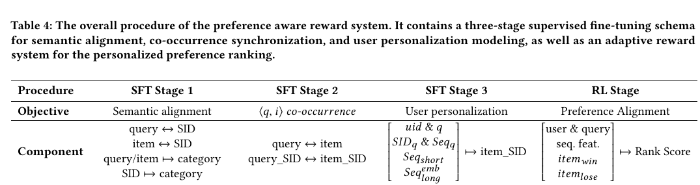
Table 4 把这一部分总结得很清楚：SFT 分成 3 个阶段。
-
Semantic Content Alignment
- 输入 query/item 文本，输出对应 SID
- 输入 SID，反向生成原始 query/item 文本
- 输入 query/item 文本，输出 category
这一阶段的作用是把预训练语言模型里已有的文本世界，和 OneSearch 里的 SID 世界对齐起来。
-
Co-occurrence Synchronization
- 学 query 和 item 的互相预测
- 学 query SID 和 item SID 的互相预测
这一步暂时忽略用户特征，只让模型先学 query-item 本身的协同与共现结构。
-
User Personalization Modeling
- 把
uid + q + SID_q + Seq_q + Seq_short + Seq_long^{emb}作为输入 - 以 item SID 作为训练目标
这一阶段才真正贴合线上推理时的完整输入格式。
- 把
作者还特别强调了 sliding window augmentation。对短期行为序列 ，他们会滑动窗口，拿“前缀序列 → 下一个 item”去构造额外训练样本。这样做有两个作用：
- 让模型学到用户兴趣是如何变化的
- 让新用户或短历史用户也有更多较短序列样本可学
5.4.2 3.4.2 Adaptive Reward System
这部分论文专门拿 OneRec-V1 和 OneRec-V2 做对照，说明自己为什么不直接照搬。
作者的 insight 有两层：
- OneRec-V1 那种加权 P-Score + GRPO 路线，在搜索里不够直接，也不够稳定。
- OneRec-V2 虽然更接近，但 GRPO / ECPO / GBPO 一类方法容易引入 irrelevant SIDs，而且 reward tuning 很敏感。
所以他们改成了 “真实在线交互 + 自适应 reward + hybrid ranking”。
先看 reward signal。论文把交互分成 6 个 level：
- 搜索场景下购买
- 推荐场景下同类目购买
- 点击
- 曝光未点
- 同类目未展示
- 其他类目随机 item
每一级给基础权重 。但作者没有直接用原始 CTR / CVR，因为它们会有偏估计：新 item 只曝光 1 次就点击，会出现 100% CTR；而热门 item 往往被很多近似 query 曝光，反而分母更大。
因此他们先做校准：
然后得到单个 item 的加权 reward：
对于正负样本对 ，用户偏好差写成：
此外 reward model 本身是基于 SIM 的 three-tower architecture，分别学 CTR、CVR、CTCVR，最终 preference score 为：
其中 是离线 relevance score，而且权重被刻意放大到 。这个设计体现了作者的一个很强的搜索 insight：如果 relevance 没被强约束，转化信号再好也可能把搜索结果推向不相关的 item。
作者还专门指出，这个 reward model 和传统 MCA 里的 click prediction ranker 有两个关键不同：
- 特征维度不同
传统 ranker 用几千维高维特征；OneSearch 的 reward model 只用
uid / query / behavior sequence / profile，和生成模型输入空间一致。 - 采样策略不同 他们还把推荐场景里“同类目购买”的样本加入训练，因为这类样本能补足搜索日志里的偏好信号。
5.4.3 Hybrid Ranking Framework
在 reward 之外，论文还做了一个 hybrid ranking / preference alignment 过程。
第 1 阶段是 reward-guided training：
- 从真实搜索日志里取 query
- 让 finetuned OneSearch 生成 item
- 用 reward model 重新排序6
- 只保留 ranking changes 发生的样本
- 被 reward 提升位置、或被点击的 item 作正样本
- 被压到后面或低位的 item 作负样本
这样训练就是一个正样本和多个负样本，然后做 listwise DPO，目标写成：
这里：
- 是 preferred item
- 是 negative item set
- == 是语言模型相对 reference model 隐式定义出来的 reward==
论文把它写成：
作者随后又补了一个很关键的 insight：如果整个系统一直依赖 reward model 来教 OneSearch，它的 ceiling 会被传统在线系统的反馈分布限制住。所以第 2 阶段，他们再直接用真实用户交互训练：
- 前 3 个交互 level 作正样本
- 后 3 个交互 level 作负样本
- 继续用同样的 loss 训练
也就是说，reward model 在这里更像“过渡性教师”，不是最终裁判。
6. 实验与结果
6.1 实验设置
论文的实验部分也基本按原文顺序看会更清楚。
数据与评估：
- 数据来自快手小搜索平台，时间跨度是 2025 年 5 月到 8 月。
- 总量约
1 billion PVs。 - 前 90 天用于训练，最后 1 天作为测试集。
- 离线评估取了
30,000条 click 行为对和30,000条 order 行为对。 - 指标是
HitRate@350和MRR@350。
基线与实现：
- 基线是线上真实
onlineMCA，不是作者自己伪造的离线 MCA。 - 额外还有一个
MCA w/o ranking对照，只保留 recall 和 pre-ranking，不跑 final ranking。 - base model 用的是
Bart-B。 - beam size 设为
512，short sequence 最大窗口长度设为5。 - RQ-OPQ 使用
C = 5层 codebook，其中3层 RQ-Kmeans，2层 residual OPQ，对应W = (4096, 1024, 512, 256, 256)。
这套设置对应了论文的目标：不是证明“某个离线 toy task 上能 work”，而是直接和真实线上系统对打。
6.2 4.1 Offline Performance：离线结果在证明什么
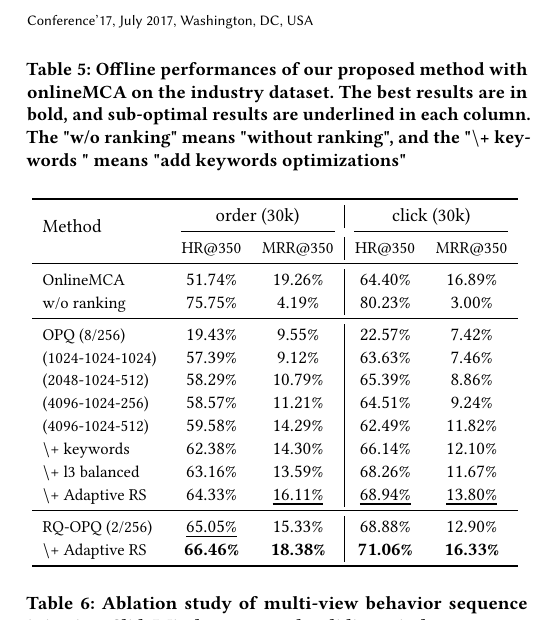
Table 5 的关键结论不是“最终指标涨了”，而是它把论文前面每一个设计点都串到了离线结果上。
先看基线对照：
OnlineMCA- order:
HR@350 = 51.74%,MRR@350 = 19.26% - click:
HR@350 = 64.40%,MRR@350 = 16.89%
- order:
w/o ranking- order:
HR@350 = 75.75%,MRR@350 = 4.19% - click:
HR@350 = 80.23%,MRR@350 = 3.00%
- order:
这个对照很有信息量。w/o ranking 的 recall 特别高，但 MRR 很差，说明 pre-ranking 确实能把“有过交互的 item”抓进来，却没法把真正意图 item 排到前面。作者据此指出：MCA 的 objective collision 是真实存在的。
再看方法逐步增强：
- 只做
RQ-Kmeans，且前层 codebook 从1024增到4096，指标逐步涨。 + keywords继续涨，说明 3.1.2 的关键词增强不是摆设。+ l3 balanced再涨，说明只在第三层做平衡化确实比 full-layer balanced 合理。+ Adaptive RS后：- order 的
HR@350 / MRR@350到64.33% / 16.11% - click 的
HR@350 / MRR@350到68.94% / 13.80%
- order 的
- 最终
RQ-OPQ (2/256) + Adaptive RS达到：- order:
66.46% / 18.38% - click:
71.06% / 16.33%
- order:
作者在正文里还额外总结：adaptive reward preference learning 平均带来了 1.80% 的 HR 提升和 3.24% 的 MRR 提升。也就是说，真正把生成结果往“可排序”方向拉回来的，是 3.4 里的 reward system。
6.3 4.2 Ablation Study：每个设计到底贡献了什么
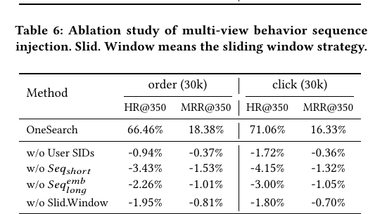
Table 6 验证的是 3.2 的 multi-view behavior sequence injection。
结论非常直接：
w/o User SIDs- 用 Hashing User ID 替代行为构造 user ID
- average HR 掉约
1.33% - 说明作者对 Tiger random UID 的批评是成立的
w/o Seq_short- order
HR@350掉3.43% - click
HR@350掉4.15% - 是所有 ablation 里掉得最狠的，说明最近行为是最强的搜索意图信号
- order
w/o Seq_long^{emb}- order / click 也都明显下降
- 说明长期历史虽然不能直接塞 prompt，但不能缺席
w/o Slid.Window- 继续退化
- 说明 sliding window augmentation 确实帮助模型学兴趣变化
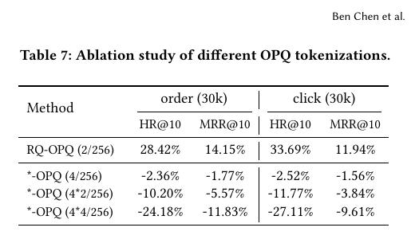
Table 7 验证的是 OPQ 应该加多少。
结论是：
- 基础版
RQ-OPQ (2/256)最好 *(4/256)已经开始退化*(4*2/256)和*(4*4/256)基本崩掉
作者的解释是：继续给所有层都做 OPQ，会拉长解码序列，也会让原本层次化的特征表示不再 distinct。这个判断和他们前面对 full-layer balanced k-means 的批评是同一路思考方式：搜索里的离散编码，不能为了更多 token 或更均匀分配，而破坏“层次结构”和“可解码性”本身。
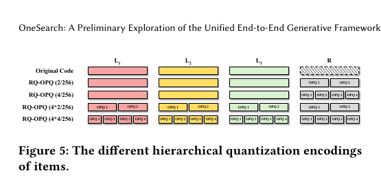
Figure 5 只是把不同 OPQ 编码方式更直观地画出来。配合 Table 7 看，会更容易理解为什么 RQ-OPQ (2/256) 是“刚刚好”的点。
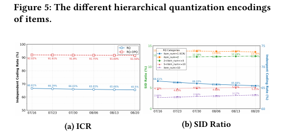
Figure 6 看的是 tokenizer 在真实商品池变化下的稳定性。论文用 7 月 15 日的所有商品构建 tokenizer，再随着新 item 不断加入，跟踪 CUR / ICR 变化。结果是：
- RQ-Kmeans 的变化更大
- RQ-OPQ 更稳
- 即便经历促销新增商品冲击，数值波动也不大
作者举了一个很直观的例子：RQ-Kmeans 的 CUR 下降约 1.11%，而 RQ-OPQ 只下降 0.43%。这对搜索很关键，因为商品池是持续变化的，tokenizer 不能一遇到新品就失效。
6.4 4.3 Online A/B Testing：线上结果在说明什么
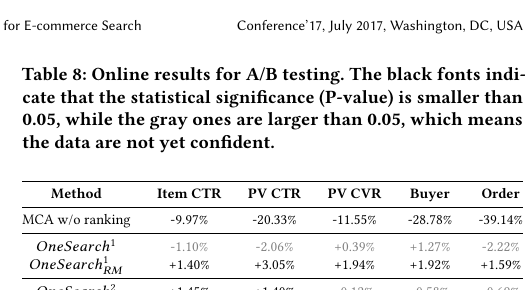
Table 8 的设计很有层次，作者其实在同时回答三个问题。
第一，纯生成模型本身够不够强？
OneSearch^2（所有优化都打开，但不加 reward model re-ranking）已经能做到：
- Item CTR
+1.45% - PV CTR
+1.40%
但：
- PV CVR
-0.12% - Buyer
-0.58% - Order
-0.69%
这说明统一生成已经能把更相关、更容易点的 item 提上来，但还不够擅长最后的转化排序。
第二，reward-based selection 到底值不值？
OneSearch^2_{RM} 后，所有指标一起拉正：
- Item CTR
+1.67% - PV CTR
+3.14% - PV CVR
+1.78% - Buyer
+2.40% - Order
+3.22%
所以 3.4 的 reward system 不是锦上添花，而是把“纯生成的相关性优势”真正转换成“业务转化优势”的关键桥梁。
第三，传统 ranking stage 还重要吗？
MCA w/o ranking 的结果是：
- Buyer
-28.78% - Order
-39.14%
这说明 final ranking 在传统流水线里确实扮演了非常重要的作用，也反过来证明 OneSearch 不是只跟一个很弱的基线对比。
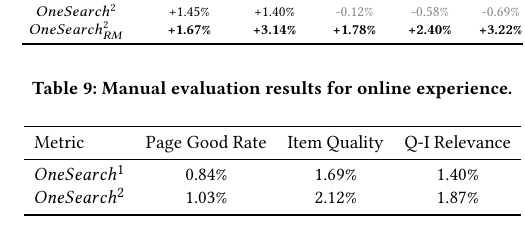
Table 9 补的是人工评估维度：
- Page Good Rate
+1.03% - Item Quality
+2.12% - Q-I Relevance
+1.87%
这很关键，因为它说明线上收益不只是“更会蹭点击”，而是页面质量和 query-item 匹配也一起变好了。
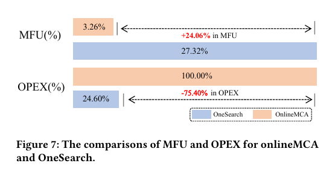
Figure 7 对应的是部署效率。作者报告：
- MFU 从
3.26%提到27.32% - OPEX 降到 OnlineMCA 的
24.60%
这说明 OneSearch 不只是更准，还确实更接近“统一生成框架替代复杂多阶段系统”的工业形态。
6.5 4.4 Further Analysis：收益出现在哪些 query 和哪些场景
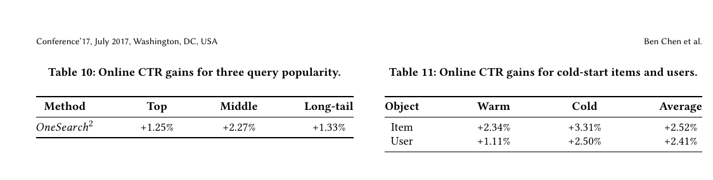
Table 10 和 Table 11 是作者对线上收益来源的进一步拆解。
按 query popularity 分：
- Top：
+1.25% - Middle：
+2.27% - Long-tail：
+1.33%
按 cold-start 分：
- cold item：
+3.31% - cold user：
+2.50%
论文特别指出，冷启动 item / user 的提升甚至大于 warm 场景，说明 OneSearch 对“语义 + 行为”的统一建模，确实能缓解 cold-start。
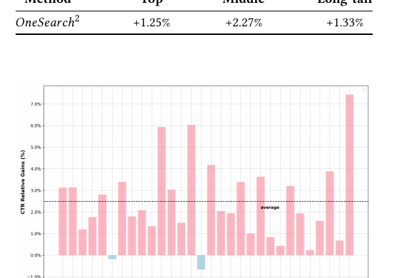
Figure 8 则说明收益不是只集中在某几个行业：
- top 30 行业里，28 个行业 CTR 都涨
- 平均增益是
2.49% - 两个负收益行业也没有显著性
作者还在这一节里给了两个很有启发的 insight：
- reasoning capability 他们认为 OneSearch 比传统浅层 ranking model 更能利用 long / short behavior 去推断潜在意图。论文举的例子是：用户之前搜 “couple sneakers” 和 “Valentine’s Day gifts”，之后搜 “silver ring”，OneSearch 能推出她可能想找情侣对戒。
- future work OPQ-based tokenization 让热点新词能更快被处理，作者因此把“online real-time encoding”和“统一编码 + 推理”列成后续方向。
7. 我的理解与局限
7.1 真正的承重模块不是 backbone，而是“表示 + 奖励”
如果只看表面，OneSearch 像是“一个 encoder-decoder 直接生成 item SID”。但从论文证据看，真正承重的是两块：
- KHQE：没有好的 SID，生成器根本学不到稳定的 item 语义空间。
- Preference Aware Reward System：没有这层，纯生成只能保证相关性和点击，不足以稳定优化转化。
换句话说，这篇论文更像是在重写搜索里的“表示空间和训练目标”，而不只是换模型骨干。
7.2 这篇论文其实没有完全摆脱 MCA
这不是批评，而是一个需要记住的现实约束。论文里的 reward model 仍然大量利用了传统在线系统和真实曝光反馈；甚至 offline / online 评估也都以 MCA 为参照。我的理解是，OneSearch 已经把生成模型推到了能接管主流程的位置，但它还没有完全摆脱旧系统的分布与监督方式。
这也解释了为什么：
- 纯生成版先涨 CTR；
- reward rerank 再把 buyer / order 拉回来；
- 作者最后还专门保留了第二阶段 user interaction training。
7.3 量化编码的时效性仍然是一个硬约束
论文自己也承认，商品池是不断变化的，尤其大促时新商品和热点词会快速涌入。OneSearch 通过 OPQ 和关键词增强减轻了这个问题，但还没有彻底解决。作者在结尾明确把“在线实时编码”和“统一编码 + 推理”作为后续方向。
所以我觉得这篇论文最真实的局限是：它已经证明统一生成框架可行，但 SID 体系仍然需要跟着商品世界持续维护。
8. 结论
OneSearch 的核心贡献可以压缩成一句话：把电商搜索从“多阶段筛选问题”改写成了“统一生成 + 偏好校正问题”。
如果以后要快速回忆这篇论文，我会记住下面 5 个点：
- Figure 1 的目标：不是做生成式 recall，而是想吞掉整个
recall -> pre-rank -> rank链条。 - KHQE 是基础：RQ-Kmeans 负责层次语义，OPQ 负责残差差异，核心关键词保证 query-item 约束不被噪声属性冲淡。
- 用户行为是三路注入：行为构造 user ID、显式短期序列、隐式长期序列，不是简单拼 prompt。
- reward system 不可缺：纯生成能涨 CTR，但真正把转化指标全面拉正的是 reward-based selection。
- 工业价值很强：线上
Order +3.22%，同时 MFU 从3.26%提到27.32%，OPEX 只剩原来的24.60%。